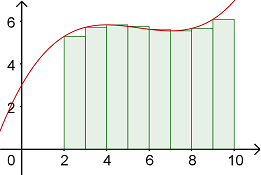

Double & Polar Integrals
Multiple Integrals
Multiple Integrals
Recall back in Calc 1 that we used Riemann Sums to approximate the area under a curve. We did this by computing the area of rectangles with heights determined by where the top of each rectangle touched the given function on the left side, right side, or midpoint. The width of each rectangle was given by \(\Delta x\). To find the total area, we computed the sum \(\Sigma\) of all of the rectangles.
Now that we are in 3D space, we can use a similar idea to approximate the volume under a surface. This time, we will use rectangular boxes whose height is determined by the given function and its base area is a rectangle in the \(xy\)-plane.
Here is the GeoGebra graph from the video above, followed by some generalizations we can make about how to find the volume under a surface using Riemann sums.
Approximate Volume Of \(f\) Over The Region \(R\): For a function \(z=f(x,y)\) defined over a rectangular region \(R\) in the \(x\)y-plane that is divided into \(m\) sub-rectangles horizontally by \(n\) sub-rectangles vertically, the volume bounded under \(f\) over \(R\) can be approximated by the following formula.
\[V ≈ \ \sum\limits_{i=1}^{m}{\sum\limits_{j=1}^{n}{f\left({{x}_{ij}},{{y}_{ij}} \right)\Delta A}}\]Self-Check #1: Approximate the volume under \(f(x,y) = \sqrt{xy+1}\) over the region \(R = [1,5] \times [2,11]\) with \(m = 2\) rectangular divisions in the \(x\) direction and \(n = 3\) rectangular divisions in the \(y\) direction using the lower-left corner of each sub-rectangle. (Do not round your intermediate computations. Enter your answer rounded to 2 decimal places)
(Answer: 112.96) -- Compute the dimensions of the sub-rectangles to be \(\Delta x = \frac{b-a}{m} = \frac{5-1}{2} = 2\) and \(\Delta y = \frac{d-c}{n} = \frac{11-2}{3} = 3\). Then we can approximate the volume as follows.
\[\begin{align*} V &\approx \Delta x \Delta y \left( f(1,2) + f(3,2) + f(1,5) + f(3,5) + (1,8) + f(3,8)\right) \\ &= (2)(3)\left(\sqrt{3} + \sqrt{7} + \sqrt{6} + \sqrt{16} + \sqrt{9} + \sqrt{25} \right) \\ &\approx 6(18.8272918614) \\ &\approx 112.96 \end{align*}\]In order to go from the approximate volume to the exact volume, we can decrease the size of each sub-rectangle and include more of them. In other words, we let \(\Delta x \rightarrow 0\) and \(\Delta y \rightarrow 0\) which results in \(m \rightarrow \infty\) and \(n \rightarrow \infty\), meaning that we get more and more sub-rectangles as we make their base area smaller and smaller - until we get infinitely many and the exact volume.
Double Integral of \(f\) Over the Region \(R\): For a function \(z=f(x,y)\) defined over a rectangular region \(R\) in the \(x\)y-plane that is divided into \(m\) by \(n\) sub-rectangles, the volume bounded under \(f\) over \(R\) can be computed using the following formula.
\[\underset{R}{\mathop\iint}\,f\left( x,y \right)~dA=\underset{m,n\to \infty }{\mathop{\lim }}\,\underset{i=1}{\overset{m}{\mathop \sum }}\,\underset{j=1}{\overset{n}{\mathop \sum }}\,f\left( {{x}_{i}},{{y}_{i}} \right)\Delta A\]Let's look at an illustration to better understand how an iterated integral works.
Here is the GeoGebra graph from the video above, followed by some generalizations we can make about how to find the volume under a surface using iterated integrals.
The above illustration leads to the following theorem.
Fubini's Theorem: Given a continuous function \(f\) over a rectangular region \(R = [a,b] \times [c,d]\) in the \(xy\)-plane, we can compute the double integral of \(f\) over \(R\) using either iterated integral below.
\[\underset{R}{\mathop \iint}\, f(x,y)~dA = \int_{a}^{b} \int_{c}^{d}\, f(x,y)~dy~dx = \int_{c}^{d} \int_{a}^{b}\, f(x,y)~dx~dy\]Let's look at an example of how we can use this theorem to evaluate a double integral.
Self-Check #2: Compute the volume under \(f(x,y) = 12x^2y^3\) over the rectangular region \([0,3] \times [1,5]\). (Select the most appropriate response.)
(Answer: D) -- Set up and evaluate the following integral.
\[\begin{align*} V &= \underset{R}{\mathop \iint}\, f(x,y)~dA \\ &= \int_{0}^{3} \int_{1}^{5}\, 12x^2y^3~dy~dx \\ &= \int_{0}^{3} \left( 3x^2y^4 \right)\biggr|_{1}^{5}~dx \\ &= \int_{0}^{3} \left( 3x^2(5)^4 - 3x^2(1)^4 \right)~dx \\ &= \int_{0}^{3} \left( 1872x^2 \right)~dx \\ &= \left( 624x^3 \right)\biggr|_{0}^{3} \\ &= 624(3)^3 - 624(0)^3 \\ &= 16,848 \end{align*}\]Remember that by Fubini's Theorem, you could have also integrated with respect to \(dxdy\) and the final result would be the same.
In addition to computing the volume of a solid, double integrals can also compute the average value of a function \(f(x,y)\) over a region \(R\). Normally, we think of computing an average by adding up a set of numbers and the dividing by how many numbers were added together. Thus the average value of a function \(f(x,y)\) would be the sum of all values of \(f\) over \(R\) divided by the number of values of \(f\), which would equal the value of the area of \(R\).
Average Value: Given a continuous function \(f\) over a region \(R\) in the \(xy\)-plane where the area of \(R\) is \(A\), we can compute the average value of \(f\) over \(R\) using the double integral below.
\[f_{avg} = \frac{1}{A} \underset{R}{\mathop \iint}\, f(x,y)~dA\]Example: Set up and evaluate a double integral to compute the average value of the function \(f(x,y) = 10xy\) over the region \(R = [1,3] \times [-1,5]\).
Since the given region \(R\) is a rectangle, it is very easy to compute its volume. We get \(A = L \times W = (3-1)(5+1) = (2)(6) = 12\). Now we just need to plug the area, function, and bounds of \(R\) into the above formula to complete the integral setup. Note that we could have also set up an equivalent integral using \(dxdy\).
\[f_{avg} = \frac{1}{A} \underset{R}{\mathop \iint}\, f(x,y)~dA = \frac{1}{12} \int_{1}^{3} \int_{-1}^{5} 10xy ~dydx\]We can use the above strategy to evaluate this iterated integral.
\[\begin{align*} f_{avg} &= \frac{1}{12} \int_{1}^{3} \int_{-1}^{5} 10xy ~dydx \\ &= \frac{1}{12} \int_{1}^{3} \left( 5xy^2 \right) \biggr|_{-1}^{5} ~dx \\ &= \frac{1}{12} \int_{1}^{3} \left( 5x(5)^2 \right) - \left( 5x(-1)^2 \right) ~dx \\ &= \frac{1}{12} \int_{1}^{3} 120x ~dx \\ &= \frac{1}{12} \left( 60x^2 \right) \biggr|_{1}^{3} \\ &= \frac{1}{12} \left[ \left( 60(3)^2 \right) - \left( 60(1)^2 \right) \right] \\ &= \frac{1}{12} \left( 480 \right) \\ &= 40 \end{align*}\]So, the average value of all of the values of \(f\) over the region \(R\) is \(40\).
Self-Check #3: Compute the average value of \(f(x,y) = x^2\sin{y}\) over the region \(R = [0,2] \times [0,\frac{\pi}{2}]\). (Enter your answer rounded to 2 decimal places)
(Answer: 0.85) -- First, we need to find the area of \(R\).
\[A = (2-0)\left(\frac{\pi}{2}-0\right) = (2)\left(\frac{\pi}{2}\right) = \pi\]Set up and evaluate the following integral.
\[\begin{align*} f_{avg} &= \frac{1}{A} \underset{R}{\mathop \iint}\, f(x,y)~dA \\ &= \frac{1}{\pi}\int_{0}^{\pi/2} \int_{0}^{2} x^2 \sin{y}~dx~dy \\ &= \frac{1}{\pi} \int_{0}^{\pi/2} \left( \frac{1}{3} x^3 \sin{y} \right) \biggr|_{0}^{2}~dy \\ &= \frac{1}{\pi} \int_{0}^{\pi/2} \left(\frac{8}{3}\sin{y}\right) - (0)~dy \\ &= \frac{1}{\pi} \int_{0}^{\pi/2} \frac{8}{3}\sin{y}~dy \\ &= \frac{8}{3\pi} \int_{0}^{\pi/2} \sin{y}~dy \\ &= \frac{8}{3\pi} \left( -\cos{y} \right)\biggr|_{0}^{\pi/2} \\ &= \frac{8}{3\pi} \left( -\cos{\left(\frac{\pi}{2}\right)} - \left( -\cos(0) \right)\right) \\ &= \frac{8}{3\pi} \left(0 + 1 \right) \\ &= \frac{8}{3\pi} \\ &\approx 0.85 \end{align*}\]©2024 M4thG33x (new window) Some Rights Reserved.